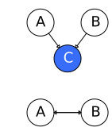
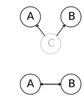

The key tool for probabilistic inference is the joint probability table. Each row in a joint probability table describes a combination of values for a set of random variables. That is, say you have $n$ events which have a binary outcome (T/F). A row would describe a unique configuration of these events, e.g. if $n=4$ then one row might be $0,0,0,0$ and another might be $1,0,0,0$ and so on. Consider the simpler case of $n=2$, with binary random variables $X,Y$:
X
Y
P(X,Y)
0
0
0.25
1
0
0.45
0
1
0.15
1
1
0.15
Using a joint probability table you can learn a lot about how those events are related probabilistically.
The problem is, however, that joint probability tables can get very big, which is another way of saying that models (since joint probability tables are a representation of probabilistic models) can get complex very quickly.
Typically, we have a set of random variables $x_1, \dots, x_n$ and we want to compute their probability for certain states together; that is, the joint distribution $P(x_1, \dots, x_n)$.
Even in the simple case where each random variable is binary, you would still have a distribution over $2^n$ states.
We can use probabilistic graphical models (PGMs) to reduce this space. Probabilistic graphical models allow us to represent complex networks of interrelated and independent events efficiently and with sparse parameters. All graphical models have some limitations in their ability to graphically express conditional (in)dependence statements but are nevertheless very useful.
There are two main types of graphical models:
Bayesian models: aka Bayesian networks, sometimes called Bayes nets or belief networks. These use directed graphs and are used when there are causal relationships between the random variables.
Markov models: These use undirected graphs and are used when there are noncausal relationships between the random variables.
Factors
The concept of factors is important to PGMs.
A factor is a function $\phi(X_1, \dots, X_k)$ which takes all possible combinations of outcomes (assignments) for these random variables $X_1, \dots, X_k$ and gives a real value for each combination.
The set of random variables $\{X_1, \dots, X_k\}$ is called the scope of the factor.
A joint distribution is a factor which returns a number which is the probability of a given combination of assignments.
An unnormalized measure is also a factor, e.g. $P(I,D, g^1)$.
A conditional probability distribution (CPD) is also a factor, e.g. $P(G|I,D)$.
A common operation on factors is a factor product. Say we have the factors $\phi_1(A,B)$ and $\phi_2(B,C)$. Their factor product would yield a new factor $\phi_3(A,B,C)$. The result for a given combo $a_i, b_j, c_k$ is just $\phi_1 (a_i, b_j) \cdot \phi_2(b_j, c_k)$.
Another operation is factor marginalization. This is the same as marginalization for probability distributions but generalized for all factors. For example, $\phi(A,B,C) \to \phi(A,B)$.
Another operation is factor reduction which is similarly is a generalization of probability distribution reduction.
Belief (Bayesian) Networks
Say we are looking at five events:
a dog barking ($D$)
a raccoon being present ($R$)
a burglar being present ($B$)
a trash can is heard knocked over ($T$)
the police are called ($P$)
We can encode some assumptions about how these events are related in a belief net (also called a Bayesian net):
Belief Network
Every node is dependent on its parent and nothing else that is not a descendant. To put it another way: given its parent, a node is independent of all its non-descendants.
For instance, the event $P$ is dependent on its parent $D$ but not $B$ or $R$ or $T$ because their causality flows through $D$.
$D$ depends on $B$ and $R$ because they are its parents, but not $T$ because it is not a descendant or a parent. But $D$ may depend on $P$ because it is a descendant.
We can then annotate the graph with probabilities:
Belief Network
The $B$ and $R$ nodes have no parents so they have singular probabilities.
The others depend on the outcome of their parents.
With the belief net, we only needed to specify 10 probabilities.
If we had just constructed joint probability table, we would have had to specify $2^5=32$ probabilities (rows).
If we expand out the conditional probability of this system using the chain rule, it would look like:
But we can bring in our belief net's conditional independence assumptions to simplify this:
$$
P(p,d,b,t,r) = P(p|d)P(d|b,r)P(b)P(t|r)P(r)
$$
Belief networks are acyclical, that is, they cannot have any loops (a node cannot have a path back to itself). In particular, they are a directed acyclic graph (DAG).
Two nodes (variables) in a Bayes net are on an active trail if a change in one node affects the other. This includes cases where the two nodes have a causal relationship, an evidential relationship, or have some common cause.
Formally, a belief network is a distribution of the form:
where $(i_1, i_2, i_3)$ is any permutation of $(1,2,3)$.
Without any conditional independence assumptions, all factorizations produce an equivalent DAG.
However, once you begin dropping edges (i.e. making conditional independence assumptions), the graphs are not necessarily equivalent anymore.
Some of the graphs are equivalent; they can be converted amongst each other via Bayes' rule. Others cannot be bridged in this way, and thus are not equivalent.
Note that belief networks encode conditional independences but do not necessarily encode dependences.
For instance, the graph $a \to b$ appears to mean that $a$ and $b$ are dependent. But there may be an instance of the belief network distribution such that $p(b|a) = p(b)$; that is, $a$ and $b$ are independent. So although the DAG may seem to imply dependence, there may be cases where it in fact does not.
In these cases, we call this implied dependence graphical dependence.
The following belief network triple represents the conditional independence of $X$ and $Y$ given $Z$, that is $P(X,Y|Z) = P(X|Z)P(Y|Z)$.
Represents conditional independence between $X$ and $Y$ given $Z$
The following belief network triple also represents the conditional independence of $X$ and $Y$ given $Z$, in particular, $P(X,Y|Z) \varpropto P(Z|X)P(X)P(Y|Z)$.
Also represents conditional independence between $X$ and $Y$ given $Z$
The following belief network triple represents the graphical conditional dependence of $X$ and $Y$, that is $P(X,Y|Z) \varpropto P(Z|X,Y) P(X) P(Y)$.
Represents graphical conditional dependence of $X$ and $Y$
Here $Z$ is a collider, since its neighbors are pointing to it.
Generally, if there is a path between $X$ and $Y$ which contains a collider, and this collider is not in the conditioning set, nor are any of its descendants, we cannot induce dependence between $X$ and $Y$ from this path. We say such a path is blocked.
Similarly, if there is a non-collider along the path which is in the conditioning set, we cannot induce dependence between $X$ and $Y$ from this path - such a path is also said to be blocked.
If all paths between $X$ and $Y$ are blocked, we say they are d-separated.
However, if there are no colliders, or the colliders that are there are in the conditioning set or their descendants, and no non-collider conditioning variables in the path, we say this path d-connects$X$ and $Y$ and we say they are graphically dependent.
Note that colliders are relative to a path.
For example, in the accompanying figure, $C$ is a collider for the path $A-B-C-D$ but not for the path $A-B-C-E$.
Collider example
Consider the belief network $A \to B \leftarrow C$. Here $A$ and $C$ are conditionally independent. However, if we condition them on $B$, i.e. $P(A,C|B)$, then they become graphically dependent. That is, we belief the root "causes" of $A$ and $C$ to be independent, but given $B$ we learn something about both the causes of $A$ and $C$, which couples them, making them (graphically) dependent.
Note that the term "causes" is used loosely here; belief networks really only make independence statements, not necessarily causal ones.
(TODO the below is another set of notes for bayes' nets, incorporate these two)
Independence allows us to more compactly represent joint probability distributions, in that independent random variables can be represented as smaller, separate probability distributions.
For example, if we have binary random variables $A,B,C,D$, we would have a joint probability table of $2^4$ entries. However, if we know that $A,B$ is independent of $C,D$, then we only need two joint probability tables of $2^2$ entries each.
Typically, independent is too strong an assumption to make for real-world applications, but we can often make the weaker, yet still useful assumption of conditional independence.
Conditional independence is when one variable makes another variable irrelevant (because the other variable adds no additional information), i.e. $P(A|B,C) = P(A|B)$; knowing $C$ adds no more information when we know $B$.
For example, if $C$ causes $B$ and $B$ causes $A$, then knowledge of $B$ already implies $C$, so knowing about $C$ is kind of useless for learning about $A$ if we already know $B$.
As a more concrete example, given random variables traffic $T$, umbrella $U$, and raining $R$, we could reasonably assume that $U$ is conditionally independent of $T$ given $R$, because rain is the common cause of the two and there is no direct relationship between $U$ and $T$; the relationship is through $R$.
Similarly, given fire, smoke and an alarm, we could say that fire and alarm are conditionally independent given smoke.
As mentioned earlier, we can apply conditional independence to simplify joint distributions.
Take the traffic/umbrella/rain example from before. Their joint distribution is $P(T,R,U$, which we can decompose using the chain rule:
$$
P(T,R,U) = P(R)P(T|R)P(U|R,T)
$$
If we make the conditional independence assumption from before ($U$ and $T$ are conditionally independent given $R$), then we can simplify this:
$$
P(T,R,U) = P(R)P(T|R)P(U|R)
$$
That is, we simplified $P(U|R,T)$ to $P(U|R)$.
We can describe complex joint distributions more simply with these conditional independence assumptions, and we can do so with Bayes' nets (i.e. graphical models), which provide additional insight into the structure of these distributions (in particular, how variables interact locally, and how these local interactions propagate to more distant indirect interactions).
A Bayes' net is a directed acyclic graph.
The nodes in the graph are the variables (with domains). They may be assigned (observed) or unassigned (unobserved).
The arcs in the graphs are interactions between variables (similar to constraints in CSPs). They indicate "direct influence" between variables (not that this is not necessarily the same as causation, it's about the information that observation of one variable gives about the other, which can mean causation, but not necessarily, e.g. it could simply be a hidden common underlying cause), which is to say that they encode conditional independences.
For each node, we have a conditional distribution over the variable that node represents, conditioned on its parents' values.
Bayes' nets implicitly encode joint distributions as a product of local conditional distributions:
And then applying conditional independence assumptions.
The graph must be acyclic so that we can come up with a consistent ordering when we apply the chain rule (that is, decide the order for expanding the distributions). If the graph has cycles, we can't come up with a consistent ordering because we will have loops.
Note that arcs can be "reversed" (i.e. parent and children can be swapped) and encode the same joint distribution - so joint distributions can be represented by multiple Bayes' nets. But some Bayes' nets are better representations than others - some will be easier to work with; in particular, if the arcs do represent causality, the network will be easier to work with.
Bayes' nets are much smaller than representing such joint distributions without conditional independence assumptions.
A joint distribution over $N$ boolean variables takes $2^n$ space (as demonstrated earlier).
A Bayes' net, on the other hand, where the $N$ nodes each have at most $k$ parents, only requires size $O(N * 2^{k+1})$.
The Bayes' net also encodes additional conditional independence assumptions in its structure.
For example, the Bayes' net $X \to Y \to Z \to W$ encodes the joint distribution:
$$
P(X,Y,Z,W) = P(X) P(Y|X) P(Z|Y) P(W|Z)
$$
This structure implies other conditional independence assumptions, e.g. that $Z$ is conditionally independent of $X$ given $Y$, i.e. $P(Z|Y) = P(Z|X,Y)$.
More generally we might ask: given two nodes, are they independent given certain evidence and the structure of the graph (i.e. assignments of intermediary nodes)?
We can use the d-separation algorithm to answer this question.
First, we consider three configurations of triples as base cases, which we can use to deal with more complex networks. That is, any Bayes' net can be decomposed into these three triple configurations.
A simple configuration of nodes in the form of $X \to Y \to Z$ is called a causal chain and encodes the joint distribution $P(x,y,z) = P(x) P(y|x) P(z|y)$.
$X$ is not guaranteed to be (unconditionally) independent of $Z$.
However, is $X$ guaranteed to be conditionally independent of $Z$ given $Y$?
From the definition of conditional probability, we know that:
$$
P(z|x,y) = \frac{P(x,y,z)}{P(x,y)}
$$
With the Bayes' net, we can simplify this (the numerator comes from the joint distribution the graph encodes, as demonstrated previously, and the denominator comes from applying the product rule):
So yes, $X$ is guaranteed to be conditionally independent of $Z$ given $Y$ (i.e. once $Y$ is observed). We say that evidence along the chain "blocks" the influence.
Another configuration of nodes is a common cause configuration:
Common cause configuration
The encoded joint distribution is $P(x,y,z) = P(y)P(x|y)P(z|y)$.
Again, $X$ is not guaranteed to be (unconditionally) independent of $Z$.
Is $X$ guaranteed to be conditionally independent of $Z$ given $Y$?
Again, we start with the definition of conditional probability:
$$
P(z|x,y) = \frac{P(x,y,z)}{P(x,y)}
$$
Apply the product rule to the denominator and replace the numerator with the Bayes' net's joint distribution:
So again, yes, $X$ is guaranteed to be conditionally independent of $Z$ given $Y$.
Another triple configuration is the common effect configuration (also called v-structures):
Common effect configuration
$X$ and $Y$are (unconditionally) independent here.
However, is $X$ guaranteed to be conditionally independent of $Y$ given $Z$?
No - observing $Z$ puts $X$ and $Y$ in competition as the explanation for $Z$ (this is called causal competition). That is, having observed $Z$, we think that $X$ or $Y$ was the cause, but not both, so now they are dependent on each other (if one happened, the other didn't, and vice versa).
Consider the following Bayes' net:
Example Bayes' Net
Where our random variables are rain $R$, dripping roof $D$, low pressure $L$, traffic $T$, baseball game $B$.
The relationships assumed here are: low pressure fronts cause rain, rain or a baseball game causes traffic, and rain causes your friend's roof to drip.
Given that you observe traffic, the probability that your friend's roof is dripping goes up - since perhaps the traffic is caused by rain, which would cause the roof to drip. This relationship is encoded in the graph the path between $T$ and $D$.
However - if we observe that it is raining, then observation of traffic has no more effect on $D$ - intuitively, this makes sense - we already know it's raining, so seeing traffic doesn't tell us more about the roof dripping. In this sense, observing $R$ "blocks" the path between $T$ and $D$.
One exception here is the v-structure with $R,B,T$. Observing that a baseball game is happening affects our belief about it raining only if we have observed $T$. Otherwise, they are independent. So v-structures are "reversed" in some sense.
That is, we must observe $T$ to activate the path between $R$ and $B$.
Thus we make the distinction between active triples, in which information "flows" as it did with the path between $T$ and $D$ and between $R$ and $B$ when $T$ is observed, and inactive triples, in which this information is "blocked".
Active triples are chain and common cause configurations in which the central node is not observed and common effect configurations in which the central node is observed, or common effect configurations in which some child node of the central node is observed.
An example for the last case:
Triple example
If $Z$, $A$, $B$ or $C$ are observed, then the triple is active.
Inactive triples are chain and common cause configurations in which the central node is observed and common effect configurations in which the central node is not observed.
So now, if we want to know if two nodes $X$ and $Y$ are conditionally independent given some evidence variables $\{Z\}$, we check all undirected paths from $X$ to $Y$ and see if there are any active paths (by checking all its constituent triples). If there are none, then they are conditionally independent, and we say that they are d-separated. Otherwise, conditional independence is not guaranteed. This is the d-separation algorithm.
You can apply d-separation to a Bayes net and get a complete list of conditional independences that are necessarily true given certain evidence. This tells you the set of probability distributions that can be represented.
Conditional independence assumptions
Sally comes home and hears the alarm ($A=1$)
Has she been burgled? ($B=1$)
Or was the alarm triggered by an earthquake? ($E=1$)
She hears on the radio that there was an earthquake ($R=1$)
We start with $P(A,B,E,R)$ and apply the chain rule of probability:
First consider if Sally has not yet heard the radio; that is, she has only heard the alarm (so the only evidence she has is $A=1$). Sally wants to know if she's been burgled, so her question is $P(B=1|A=1)$:
So hearing the report and learning that there was an earthquake makes the burglary much less likely.
We may, however, only have soft or uncertain evidence.
For instance, say Sally is only 70% sure that she heard the alarm.
We denote our soft evidence of the alarm's ringing as $\tilde A = (0.7, 0.3)$, which is to say $P(A=1) = 0.7$ and $P(A=0) = 0.3$.
We're ignoring the case with the report ($R=1$) for simplicity, but with this uncertain evidence we would calculate:
$$
\begin{aligned}
P(B=1| \tilde A) &= \sum_A P(B=1|A) P(A|\tilde A) \\
&= 0.7 P(B=1|A=1) + 0.3 P(B=1|A=0)
\end{aligned}
$$
Unreliable evidence is distinct from uncertain evidence.
Say we represent Sally's uncertainty of hearing the alarm, as described before, as $P(S|A) = 0.7$.
Now say for some reason we feel that Sally is unreliable for other reasons (maybe she lies a lot). We would then replace the term $P(S|A)$ with our own interpretation $P(H|A)$. For example, if Sally tells us her alarm went off, maybe we think that means there's a 60% chance that the alarm actually went off.
This new term $P(H|A)$ is our virtual evidence, also called likelihood evidence.
Properties of belief networks
A note on the following graphics: the top part shows the belief network, where a faded node means it has been marginalized out, and a filled node means it has been observed/conditioned on. The bottom part shows the relationship between $A$ and $B$ after the marginalization/conditioning.
$P(A,B,C) = P(C|A,B) P(A) P(B)$
$A$ and $B$ are independent and determine $C$.
If we marginalize over $C$ (thus "removing" it), $A$ and $B$ are made conditionally independent. That is, $P(A,B) = P(A)P(B)$.

If we instead condition on $C$, $A$ and $B$ become graphically dependent. Although $A$ and $B$ are a priori independent, knowing something about $C$ tells us a bit about $A$ and $B$.
If we introduce $D$ as a child to $C$, i.e. $D$ is a descendant of a collider $C$, then conditioning on $D$ also makes $A$ and $B$ graphically dependent.
In this arrangement, $C$ is the "cause" and $A$ and $B$ are independent effects: $P(A,B,C) = P(A|C) P(B|C) P(C)$.

Here, marginalizing over $C$ makes $A$ and $B$ graphically dependent. In general, $P(A,B) \neq P(A)P(B)$ because they share the same cause.
Conditioning on $C$ makes $A$ and $B$ independent: $P(A,B|C) = P(A|C)P(B|C)$. This is because if you know the "cause" $C$ then you know how the effects $A$ and $B$ occur independent of each other.
The same applies for this arrangement - here $A$ "causes" $C$ and $C$ "causes" $B$. Conditioning on $C$ blocks $A$'s ability to influence $B$.
These graphs all encode the same conditional independence assumptions.
For both directed and undirected graphs, two graphs are Markov equivalent if they both represent the same set of conditional independence statements.
Example
Consider a joint distribution over the following random variables:
$G$, grade: $g^1$ for A, $g^2$ for B, $g^3$ for C
$I$, intelligence, binary: $-i$ for low, $+i$ for high
$D$, difficulty of the course, binary: $-d$ for easy, $+d$ for hard
$S$, SAT score, binary: $-s$ for low, $+s$ for high
$L$, reference letter, binary: $-l$ for not received, $+l$ for received
We can encode some conditional independence assumptions about these random variables into a belief net:
An example belief network for this scenario
the grade depends on the student's intelligence and difficulty of the course
the student's SAT score seems dependent on only their intelligence
whether or not a student receives a recommendation letter depends on their grade
Note that we could add the assumption that intelligence students are likely to take more difficult courses, if we felt strongly about it:
An alternative belief network for this scenario
To turn this graph into a probability distribution, we can represent each node as a CPD:
The belief network annotated with nodes' distributions
Then we can apply the chain rule of Bayesian networks which just multiplies all the CPDs:
A Bayesian network (BN) is a directed acyclic graph where its nodes represent the random variables $X_1, \dots, X_n$. For each node $X_i$ we have a CPD $P(X_i | \text{Par}_G (X_i)$, where $\text{Par}_G(X_i)$ refers to the parents of $X_i$ in the graph $G$.
In whole, the BN represents a joint distribution via the chain rule for BNs:
We say a probability distribution $P$factorizes over a BN graph $G$ if the B chain rule holds for $P$.
There are three types of reasoning that occur with a BN:
- Causal reasoning includes conditioning on an ancestor to determine a descendant's probability, e.g. $P(L=1
I=0)$.
- Intercausal reasoning - consider $P(I=1
G=3,D=1)$. The $D$ node is not directly connected to the $I$ node, yet conditioning on it does affect the probability.
As the simplest example of intercausal reasoning, consider an OR gate:
An OR gate as a belief network
Knowing $Y$ and $X_1$ (or $X_2$) tells you the value of $X_2$ (or $X_1$) even though $X_1$ and $X_2$ are not directly linked. Knowing $Y$ alone does not tell you anything about $X_1$ or $X_2$'s values.
There are a few different structures in which a variable $X$ can influence a variable $Y$, i.e. change beliefs in $Y$ when conditioned on $X$:
$X \to Y$
$X \leftarrow Y$
$X \to W \to Y$
$X \leftarrow W \leftarrow Y$
$X \leftarrow W \to Y$
Which the different reasonings described above capture.
The one structure which "blocks" influence is $X \to W \leftarrow Y$. That is, where two causes have a joint effect. This is called a v-structure.
A trail is a sequence of nodes that are connected to each other by single edges in the graph. A trail $X_1 - \dots - X_k$ is active (if there is no evidence) if it has no v-structures $X_{i-1} \to X_i \leftarrow X_{i+1}$, where $X_i$ is the block.
When can variable $X$ can influence a variable $Y$ given evidence $Z$?
$X \to Y$
$X \leftarrow Y$
$X$ may influence $Y$ given evidence $Z$ under certain conditions, depending on whether or not node $W$ is part of the evidence $Z$:
$X \to W \to Y$, if $W \notin Z$
$X \leftarrow W \leftarrow Y$, if $W \notin Z$
$X \leftarrow W \to Y$, if $W \notin in Z$
$X \to W \leftarrow Y$, if either $W \in Z$ or one of $W$'s descendants $\in Z$ (intercausal reasoning)
A trail $X_1 - \dots - X_k$ is active given evidence $Z$ if, for any v-structure $X_{i-1} \to X_i \leftarrow X_{i+1}$ we have that $X_i$ or one of its descendants is in $Z$ and no other $X_i$ (not in v-structures) is in $Z$.
Independence
For events $\alpha, \beta$, we say $P$ satisfies the independence of $\alpha$ and $\beta$, notated $P \vDash \alpha \perp \beta$ if:
$P(\alpha,\beta) = P(\alpha)P(\beta)$
$P(\alpha|\beta) = P(\alpha)$
$P(\beta|\alpha) = P(\beta)$
This can be generalized to random variables:
$X, Y, P \vDash X \perp Y$ if:
$P(X,Y) = P(X)P(Y)$
$P(X|Y) = P(X)$
$P(Y|X) = P(Y)$
Conditional independence
For (sets of) random variables $X,Y,Z, P \vDash (X \perp Y | Z)$ if:
$P(X,Y|Z) = P(X|Z) P(Y|Z)$
$P(X|Y,Z) = P(X|Z)$
$P(Y|X,Z) = P(Y|Z)$
$P(X,Y,Z) \varpropto \phi_1(X,Z) \phi_2(Y,Z)$; that is, the probability of the joint distribution $P(X,Y,Z)$ is proportional to a product of the two factors $\phi_1(X,Z)$ and $\phi_2(Y,Z)$
For example:
Coin toss example
There are two coins, one is fair and one is biased to show heads 90% of the time.
You pick a coin, toss it, and it comes up heads.
The probability of heads is higher in the second toss. You don't know what coin you have but heads on the first toss makes it more likely that you have the bias coin, thus a higher chance of heads on the second toss. So $X_1$ and $X_2$ are not independent. But if you know what coin you have, the tosses are then independent; the first toss doesn't tell you anything about the second anymore. That is, $X_1 \perp X_2 | C$.
But note that conditioning can also lose you independence. For example, using the previous student example, $I \perp D$, but if we condition on grade $G$, they are no longer independent (this is the same as the OR gate example).
Student example
We say that $X$ and $Y$ are d-separated in $G$ given $Z$ if there is no active trail in $G$ between $X$ and $Y$ given $Z$. This is notated $\text{d-sep}_G(X,Y|Z)$.
If $P$ factorizes over $G$ and $\text{d-sep}_G(X,Y|Z)$, then $P$ satisfies $X \perp Y |Z)$.
Any node is d-separated from its non-descendants given its parents.
So if a distribution $P$ factorizes over $G$, then in $P$, any variable is independent of its non-descendants given its parents.
We can notate the set of independencies implicit in a graph $G$, that is, all of the independence statements that correspond to d-separation statements in the graph $G$, as $I(G)$:
If $P$ satisfies $I(G)$, then we say that $G$ is an I-map (independency map) of $P$.
This does not mean $G$ must imply all independencies in $P$, just that those that it does imply are in fact present in $P$.
SO if $P$ factorizes over $G$, then $G$ is an I-map for $P$. The converse also holds: if $G$ is an I-map for $P$, then $P$ factorizes over $G$.
Template models
Within a model you may have structures which repeat throughout or you may want to reuse common structures between/across models.
In these cases we may use template variables.
A template variable $X(U_1, \dots, U_k)$ is instantiated multiple times. $U_1, \dots, U_k$ are the arguments.
A template model is a language which specifies how "ground" variables inherit dependency models from templates.
Temporal models
A common example of template models are temporal models, used for systems which evolve over time.
When representing a distribution over continuous time, you typically want to discretize time so that it is not continuous. To do this, you pick a time granularity$\Delta$.
We also have a set of template variables. $X^{(t)}$ describes an instance of a template variable $X$ at time $t\Delta$.
The Markov assumption isn't always appropriate, or it may be too strong.
You can make it a better approximation by adding other variables about the state, in addition to $X^{(t)}$.
The second assumption we make is of time invariance.
We use a template probability model $P(X'|X)$ where $X'$ denotes the next time point and $X$ denotes the current time point. We assume that this model is replicated for every single time point.
That is, for all $t$:
$$
P(X^{(t+1)}|X^{(t)}) = P(X'|X)
$$
That is, the probability distribution is not influenced by the time $t$.
Again, this is an approximation and is not always appropriate. Traffic, for example, has a different dynamic depending on what time of day it is.
Again, you can include extra variables to capture other aspects of the state of the world to improve the approximation.
Temporal model example (transition model)
Temporal model example
$W$ = weather
$V$ = velocity
$L$ = location
$F$ = failure
$O$ = observation
The left column of the graph is at time slice $t$, and the right side is at time slice $t+1$.
The edges connecting the nodes at $t$ to the nodes at $t+1$, e.g. $F \to F'$, is an inter-time-slice, and the edges connecting nodes at $t+1$ to the observation, e.g. $F' \to O'$, are intra-time-slices.
We can describe a conditional probability distribution (CPD) for our prime variables as such:
$$
P(W', V', L', F', O' | W, V, L, F)
$$
We don't need a CPD for the non-prime variables because they have already "happened".
We can rewrite this distribution with the independence assumptions in the graph:
Here the observation $O'$ is conditioned on variables in the same time slice ($L', F'$) because we assume the observation is "immediate". This is a relation known as an intra-time-slice.
All the other variables are conditioned on the previous time slice, i.e. they are inter-time-slice relations.
Now we start with some initial state (time slice 0, $t_0$):
Temporal model example initial state
Then we add on the next time slice, $t_1$:
Temporal model example at $t_1$
And we can repeatedly do this to represent all subsequent time slices $t_2, \dots$, where each is conditioned on the previous time slice.
So we have a 2-time-slice Bayesian network (2TBN). A transition model (2TBN) over $X_1, \dots, X_n$ is specified as a BN fragment such that:
the nodes include $X_1', \dots, X_n'$ (next time slice $t+1$) and a subset of $X_1, \dots, X_n$ (time slice $t$).
only the nodes $X_1', \dots, X_n'$ have parents and a CPD
The 2TBN defines a conditional distribution using the chain rule:
We can consider a Markov model as a chain-structured Bayes' Net, so our reasoning there applies here as well.
Each node is a state in the sequence and each node is identically distributed (stationary) and depends on the previous state, i.e. $P(X_t|X_{t-1})$ (except for the initial state $P(X_1)$). This is essentially just a conditional independence assumption (i.e. that $P(X_t)$ is conditionally independent of $X_{t-2}, X_{t-3}, \dots, X_1$ given $X_{t-1}$).
The parameters of a Markov model are the transition probabilities (or dynamics) and the initial state probabilities (i.e. the initial distribution $P(X_1)$.
Say we want to know $P(X)$ at time $t$. A Markov model algorithm for solving this is the forward algorithm, which is just an instance of variable elimination (in the order $X_1, X_2, \dots$). A simplified version:
$P(X_t)$ converges as $t \to \infty$, and it converges to the same values regardless of the initial state. This converged distribution, independent of the initial state, is called the stationary distribution. The influence of the initial state fades away as $t \to \infty$.
The key insight for a stationary distribution is that $P(X_t) = P(X_{t-1})$, and that this is independent of the initial distribution.
A dynamic Bayes' net (DBN) is a Bayes' net replicated through time, i.e. variables at time $t$ can be conditioned on those from time $t-1$ (the structure is reminiscent of a recurrent neural network).
A dynamic Bayesian network over $X_1, \dots, X_n$ is defined by a:
2TBN $\text{BN}_{\to}$ over $X_1, \dots, X_n$
a Bayesian network $\text{BN}^{(0)}$ over $X_1^{(0)}, \dots, X_n^{(0)}$ (time 0, i.e. the initial state)
Ground network
For a trajectory over $0, \dots, T$, we define a ground (unrolled network) such that:
the dependency model for $X_1^{(0)}, \dots, X_n^{(0)}$ is copied from $\text{BN}^{(0)}$
the dependency model for $X_1^{(t)}, \dots, X_n^{(t)}$ for all $t > 0$ is copied from $\text{BN}_{\to}$
That is, it is just an aggregate ("unrolled") of the previously shown network up to time slice $t_T$.
Often we have a sequence of observations and we want to use these observations to learn something about the underlying process that generated them. As such we need to introduce time or space to our models.
An Hidden Markov Model (HMM) is a simple dynamic Bayes' net. In particular, it is a Markov model in which we don't directly observe the state. That is, there is a Markov chain where we don't see $S_t$ but rather we see some evidence/observations/emissions/outputs/effects/etc $O_t$.
The actual observations are stochastic (e.g. an underlying state may produce one of many observations with some probability). We try to infer the state based on these observations.
For example, imagine we are in a windowless room and we want to know if it's raining. We can't directly observe whether it's raining, but we can see if people have brought umbrellas with them.
It is also a 2TBN.
HMMs are used to analyze or to predict time series involving noise or uncertainty.
There is a sequence of states $s_1 \to s_2 \to s_3 \to \dots \to S_N$. This sequence is a Markov chain (each state depends only on the previous state).
Each state emits a measurement/observation, e.g. $s_1$ emits $z_1$ ($s_1 \to z_1$), $s_2$ emits $z_2$ ($s_2 \to z_2$), and so on. We don't deserve the states directly; we only observe these measurements (hence, the underlying Markov model is "hidden").
Together, these define a Bayes network that is at the core of HMMs.
An HMM is defined by:
a state variable $S$ and an observation (sometimes called emission) variable $O$
the initial distribution $P(S_0)$
the transition model $P(S'|S)$
the observation model $P(O|X)$ (the probability of seeing evidence given the hidden state, also called an emissions model)
We introduce an additional conditional independence assumption - that the current observation is independent of everything else given the current state.
Basic HMM
You can unroll this:
Basic HMM, unrolled
HMMs, however, may also have internal structures, more commonly in the transition model, but sometimes in the observation model as well.
TODO in the following $X$ is switched with $S$, make it consistent
Example
Say we have the following HMM:
Hidden Markov Model Example
We don't know the starting state, but we know the probabilities:
That is, we applied the definition of conditional probability and then expanded the numerator with the product rule.
For an HMM, $P(E_1|X_1)$ and $P(X_1)$ are specified, so we have the information needed to compute this. We just compute $P(e_1|X_1)P(X_1)$ and normalize the resulting vector.
The second base case:
Say we want to infer $P(X_2)$, and we just have the HMM:
$$
X_1 \to X_2
$$
That is, rather than observing evidence, time moves forward one step.
For an HMM, $P(X_1)$ and $P(X_2|X_1)$ are specified.
Intuitively, what is happening here is: we look at each place we could have been, $x_t$, consider how likely it was that we were there to begin with, $B(x_t)$, and multiply it by the probability of getting to $X'$ had you been there.
Observing evidence
Assume that we have the current belief $P(X|\text{previous evidence})$:
Which we can normalize at each step (if we want $P(x|e)$ at each time step) or all together at the end.
This is just variable elimination with the order $X_1, X_2, \dots$.
This computation is proportional to the square number of states.
Most Likely Explanation
With Most Likely Explanation, the concern is not the state at time $t$, but the most likely sequence of states that led to time $t$, given observations.
For MLE, we use an HMM and instead we want to know:
$$
\argmax_{x_{1:t}} P(x_{1:t}|e_{1:t})
$$
We can use the Viterbi algorithm to solve this, which is essentially just the forward algorithm where the $\sum$ is changed to a $\max$:
The surrounding box is the plate. The idea is that these are "stacked", one for each toss $t$. That is, they are indexed by $t$.
The $\theta$ node denotes the CPD parameters. This is outside the plate, i.e. it is not indexed by $t$.
Another way of visualizing this:
Simple plate model, alternative representation
Where $o(t_i)$ is the outcome at time $t_i$. This representation makes it more obvious that each of these plates is a copy of a template.
Another example:
A plate model for students
Plates may be nested:
A nested plate model for students
If we were to draw this out for two courses and two students:
Unrolled student plate model
One oddity here is that now intelligence depends on both the student $s$ and the course $c$, whereas before it depends only on the student $s$. Maybe this is desired, but let's say we want what we had before. That is, we want intelligence to be independent of the course $c$.
Instead, we can use overlapping plates:
An overlapping plate model for students
Plate models allow for collective inference, i.e. they allow us to look at the aggregate of these individual instances in order to find broader patterns.
More formally, a plate dependency model:
For a template variable $A(U_1, \dots, U_k)$ we have template parents $B_1(U_1), \dots, B_m(U_m)$; that is, an index cannot appear in the parent which does not appear in the child. This is a particular limitation of plate models.
We get the following template CPD: $P(A|B_1, \dots, B_m)$.
Structured CPDs
We can represent CPDs in tables, e.g.
$g_1$
$g_2$
$g_3$
$i_0, d_0$
$i_0, d_1$
$i_1, d_0$
$i_1, d_1$
But as we start to have more variables, this table can explode in size.
More generally, we can just represent a CPD $P(X|Y_1, \dots, Y_k)$, which specifies a distribution over $X$ for each assignment $Y_1, \dots, Y_k$ using any function which specifies a factor $\phi(X, Y_1, \dots, Y_k)$ such that:
$$
\sum_x \phi(x, y_1, \dots, y_k) = 1
$$
for all $y_1, \dots, y_k$.
There are many models for representing CPDs, including:
deterministic CPDs
tree-structured CPDs
logistic CPDs and generalizations
noisy OR/AND
linear Gaussians and generalizations
Context-specific independence shows up in some CPD representations. It is a type of independence where we have a particular assignment $c$, from some set of variables $C$, $P \vDash (X \perp_c Y | Z, c)$
Which is to say this independence holds only for particular values of $c$, rather than all values of $c$.
For example, consider:
An OR gate as a belief network
Where $X$ is a deterministic OR of $Y_1, Y_2$.
Consider:
$X \perp Y_1 | y_2^0$. When $Y_2$ is false, $X$ just takes on the value of $Y_1$, so there's no context-specific independence here.
$X \perp Y_1 | y_2^1$. When $Y_2$ is true, then it doesn't matter what value $Y_1$ takes, since $X$ will be true too. Thus we have context-specific independence.
$Y_1 \perp Y_2 | x^0$. If we know $X$ is false, we already know $Y_1, Y_2$ are false, independent of each other. So we have context-specific independence here.
$Y_1 \perp Y_2 | x^1$. We don't have context-specific independence here.
Tree-structured CPDs
Say we have the following model:
Simple model
That is, whether or not a student gets a job $J$ depends on:
$A$ - if they applied ($+a, -a$)
$L$ - if they have a letter of recommendation ($+l, -l$)
$S$ - if they scored well on the SAT ($+s, -s$)
We can represent the CPD as a tree structure.
Tree-structured CPD
Note that the notation at the leaf nodes is the probability of not getting the job and of getting it, i.e. $(P(-j), P(+j)$.
A bit more detail: we're assuming its possible that the student gets the job without applying, e.g. via a recruiter, in which case the SAT score and letter aren't important.
We also assume that if the student scored well on the SAT, the letter is unimportant.
We have three binary random variables. If we represented this CPD as a table, it have $2^3=8$ conditional probability distributions. However, in certain contexts we only need 4 distributions since we have some context-specific independences:
$J \perp_c L| +a, +s$
$J \perp_c L,S| -a$
$J \perp_c L| +s, A$
This last one is just a compact representation of:
$J \perp_c L| +s, +a$
$J \perp_c L| +s, -a$
Consider another model:
Another model
Where the student chooses only one letter to submit.
The tree might look like:
Tree-structured CPD
Here the choice variable $C$ determines the dependence of one set of circumstances on another set of circumstances.
This scenario has context-specific independence but also non-context-specific independence:
$$
L_1 \perp L_2 | J, C
$$
Because, if you break it down into its individual cases:
$L_1 \perp_c L_2 | J, c_1$
$L_1 \perp_c L_2 | J, c_2$
both are true.
This scenario relates to a class of CPDs called multiplexer CPDs:
Multiplexer CPD
$Y$ has two lines around it to indicate deterministic dependence.
Here we have some variables $Z_1, \dots, Z_k$ and $A$ is a copy of one of these variables.
$A$ is the multiplexer, i.e. the "selector variable", taking a value from $\{1, \dots, k\}$.
That is, the value of $A$ just determines which $Z$ value $Y$ takes on.
Noisy OR CPDs
Noisy OR CPD
In a noise OR CPD we introduce intermediary variables between $x_i$ and $Y$. These intermediary variables $z$ take on 1 if its parent value satisfies its criteria. $Y$ becomes an OR variable which is true if any of the $z$ variables are true.
So if $x_i=0$, $z_i$ never gets turned on. If $x_i=1$, $z_i$ gets turned on with probability $lambda_i$.
$z_0$ is a "leak" probability which is the probability that $Y$ gets turned on by itself. $P(z_0=1) = \lambda_0$.
We can write this as a probability and consider the CPD of $Y=0$ given our $x$ variables. That is, what is the probability that all the $x$ variables fail to turn on their corresponding $z$ variables?
A noisy OR CPD demonstrates independence of causal influence. We are assuming that we have a bunch of causes $x_1, \dots, x_k$ for a variable $Y$, which each act independently to affect the truth of the $Y$. That is, there is no interaction between the causes.
Other CPDs for independence of causal influence include noisy AND, noisy MAX, etc.
Continuous variables
Consider:
Continuous variable example (simple)
We have the temperature in a room and a sensor which measures the temperature.
The sensor is not perfect, so it usually around the right temperature, but not exactly.
We can represent this by saying the sensor reading $S$ is a normal distribution around the true temperature $T$ with some standard deviation, i.e.:
$$
S \sim N(T; \sigma_S^2)
$$
This model is a linear Gaussian.
We can make it more complex, assuming that the outside temperature will also affect the room temperature:
Continuous variable example (more complex)
Where $T'$ is the temperature in a few moments and $O$ is the outside temperature. We may say that $T'$ is also a linear Gaussian:
$$
T' \sim N(\alpha T + (1-\alpha) O; \sigma_T^2)
$$
The $\alpha T + (1-\alpha) O$ term is just a mixture of the current temperature and the outside temperature.
We can take it another step. Say there is a door $D$ in the room which is either opened or closed (i.e. it is a binary random variable).
This is a conditional linear Gaussian model since its parameters are conditioned on the discrete variable $D$.
Generally, a linear Gaussian model looks like:
Basic linear Gaussian
$$
Y \sim N(w_0 + \sum w_i X_i ; \sigma^2)
$$
Where $w_0 + \sum w_i X_i$ is the mean (a linear function of the parents) and $\sigma^2$ is not related to the parents/doesn't depend on the parents.
Then, conditional linear Gaussians introduce one or more discrete parents (only one, $A$, is depicted below), and this is just a linear gaussian whose parameters depend on the value of $A$:
$$
Y \sim N(w_{a0} + \sum w_{ai} X_i; \sigma_a^2)
$$
Querying Bayes's nets
Conditional probability queries
PGMs can be used to answer many queries, but the most common is probably conditional probability queries:
Given evidence $e$ about some variables $E$, we have a query which is a subset of variables $Y$, and our task is to compute $P(Y|E=e)$.
Unfortunately, the problem of inference on graphical models is NP-Hard. In particular, the following are NP-Hard:
exact inference
given a PGM $P_{\Phi}$, a variable $X$ and a value $x \in \text{Val}(X)$, compute $P_{\Phi}(X=x)$
even just deciding if $P_{\Phi}(X=x) > 0$ is NP-hard
approximate inference
let $\epsilon < 0.5$. Given a PGM $P_{\Phi}$, a variable $X$, a value $x \in \text{Val}(X)$, and an observation $e \in \text{Val}(E)$, find a number $p$ that has $|P_{\Phi}(X=x|E=e) - p| < \epsilon$.
However, NP-Hard is the worst case result and their are algorithms that perform for most common cases.
Some conditional probability inference algorithms:
variable elimination
message passing over a graph
belief propagation
variational approximations
random sampling instantiations
Markov Chain Monte Carlo (MCMC)
importance sampling
MAP (maximum a posteriori) queries
PGMs can also answer MAP queries:
We have a set of evidence $E=e$, the query is all other variables $Y$, i.e. $Y = \{X_1, \dots, X_n\} - E$. Our task is to compute $\text{MAP}(Y|E=e) = \argmax_y P(Y=y|E=e)$. There may be more than one possible solution.
This is also a NP-hard problem, but there are also many algorithms to solve these efficiently for most cases.
Some MAP inference algorithms:
variable elimination
message passing over a graph
max-product belief propagation
using methods for integer programming
for some networks, graph-cut methods
combinatorial search
Inference in Bayes' nets
Given a query, i.e. a joint probability distribution we are interested in getting a value for, we can infer an answer for that query from a Bayes' net.
The simplest approach is inference by enumeration in which we extract the conditional probabilities from the Bayes' net and appropriately combine them together.
But this is very inefficient, especially because variables that aren't in the query require us to enumerate over all possible values for them. We lose most of the benefit of having this compact representation of joint distributions.
An alternative approach is variable elimination, which is still NP-hard, but faster than enumeration.
Variable elimination requires the notion of factors. Here are some factors:
a joint distribution: $P(X,Y)$, which is just all entries $P(x,y)$ for all $x,y$ and sums to 1.
Example:
$$
P(T,W)
$$
T
W
P
hot
sun
0.4
hot
rain
0.1
cold
sun
0.2
cold
rain
0.3
a selected joint: $P(x,Y)$, i.e. we fix $X=x$, then look at all entries $P(x,y)$ for all $y$, and sums to $P(x)$. This is a "slice" of the joint distribution.
Example:
$$
P(\text{cold}, W)
$$
T
W
P
cold
sun
0.2
cold
rain
0.3
a single conditional: $P(Y|x)$, i.e. we fix $X=x$, then look at all entries $P(y|x)$ for all $y$, and sums to 1.
Example:
$$
P(W|\text{cold})
$$
T
W
P
cold
sun
0.4
cold
rain
0.6
a family of conditionals: $P(X,Y)$, i.e. we have multiple conditions, all entries $P(x|y)$ for all $x, y$, and sums to $|Y|$.
Example:
$$
P(W|T)
$$
T
W
P
hot
sun
0.8
hot
rain
0.2
cold
sun
0.4
cold
rain
0.6
a specified family: $P(y|X)$, i.e. we fix $y$ and look at all entries $P(y|x)$ for all $x$. Can sum to anything;
Example:
$$
P(\text{rain}|T)
$$
T
W
P
hot
rain
0.2
cold
rain
0.6
In general, when we write $P(Y_1, \dots, Y_N | X_1, \dots, X_M)$, we have a factor, i.e. a multi-dimensional array for which the values are all instantiations $P(y_1, \dots, y_N|x_1, \dots, x_M)$.
Any assigned/instantiated $X$ or $Y$ is a dimension missing (selected) from the array, which leads to smaller factors - when we fix values, we don't have to consider every possible instantiation of that variable anymore, so we have less possible combinations of variable values to consider.
For example, if $X$ and $Y$ are both binary random variables, if we don't fix either of them we have four to consider ($(X=0,Y=0), (X=1,Y=0), (X=0,Y=1), (X=1,Y=1)$) . If we fix, say $X=1$, then we only have two to consider ($(X=1,Y=0), (X=1,Y=1)$).
Consider a simple Bayes' net:
$$
R \to T \to L
$$
Where $R$ is whether or not it is raining, $T$ is whether or not there is traffic, and $L$ is whether or not we are late for class.
We are given the following factors for this Bayes' net:
$P(R)$
R
P
+r
0.1
-r
0.9
$P(T|R)$
R
T
P
+r
+t
0.8
+r
-t
0.2
-r
+t
0.1
-r
-t
0.9
$P(L|T)$
T
L
P
+t
+l
0.3
+t
-l
0.7
-t
+l
0.1
-t
-l
0.9
For example, if we observe $L=+l$, so we can fix that value and shrink the last factor $P(L|T)$:
$P(+l|T)$
T
L
P
+t
+l
0.3
-t
+l
0.1
We can join factors, which gives us a new factor over the union of the variables involved.
For example, we can join on $R$, which involves picking all factors involving $R$, i.e. $P(R)$ and $P(T|R)$, giving us $P(R,T)$. The join is accomplished by computing the entry-wise products, e.g. for each $r,t$, compute $P(r,t) = P(r) P(t|r)$:
$P(R,T)$
R
T
P
+r
+t
0.08
+r
-t
0.02
-r
+t
0.09
-r
-t
0.81
After completing this join, the resulting factor $P(R,T)$ replaces $P(R)$ and $P(T|R)$, so our Bayes' net is now:
$$
(R,T) \to L
$$
We can then join on $T$, which involves $P(L|T)$ and $P(R,T)$, giving us $P(R,T,L)$:
$P(R,T,L)$
R
T
L
P
+r
+t
+l
0.024
+r
+t
-l
0.056
+r
-t
+l
0.002
+r
-t
-l
0.018
-r
+t
+l
0.027
-r
+t
-l
0.063
-r
-t
+l
0.081
-r
-t
-l
0.729
Now we have this joint distribution, and we can use the marginalization operation (also called elimination) on this factor - that is, we can sum out a variable to shrink the factor. We can only do this if the variable appears in only one factor.
For example, say we still had our factor $P(R,T)$ and we wanted to get $P(T)$. We can do so by summing out $R$:
$P(T)$
T
P
+t
0.17
-t
0.83
So we can take our full joint distribution $P(R,T,L)$ and get $P(T,L)$ by elimination (in particular, by summing out $R$):
$P(T,L)$
T
L
P
+t
+l
0.051
+t
-l
0.119
-t
+l
0.083
-t
-l
0.747
Then we can further sum out $T$ to get $P(L)$:
$P(L)$
L
P
+l
0.134
-l
0.866
This approach is equivalent to inference by enumeration (building up the full joint distribution, then taking it apart to get to the desired quantity).
However, we can use these operations (join and elimination) to find "shortcuts" to the desired quantity (i.e. marginalize early without needing to build the entire joint distribution first). This method is variable elimination.
For example, we can compute $P(L)$ in a shorter route:
join on $R$, as before, to get $P(R,T)$
then eliminate (sum out) $R$ from $P(R,T)$ to get $P(T)$
then join on $T$, i.e. with $P(T)$ and $P(L|T)$, giving us $P(T,L)$
the eliminate $T$, giving us $P(L)$
In contrast, the enumeration method required:
join on $R$ to get $P(R,T)$
join on $T$ to get $P(R,T,L)$
eliminate $R$ to get $P(T)$
eliminate $T$ to get $P(L)$
The advantage of variable elimination is that we never build a factor of more than two variables (i.e. the full joint distribution $P(R,T,L)$), thus saving time and space. The largest factor typically has the greatest influence over the computation complexity.
In this case, we had no evidence (i.e. no fixed values) to work with. If we had evidence, we would first shrink the factors involving the observed variable, and the evidence would be retained in the final factor (since we can't sum it out once it's observed).
For example, say we observed $R=+r$.
We would take our initial factors and shrink those involving $R$:
$P(+r)$
R
P
+r
0.1
$P(T|+r)$
R
T
P
+r
+t
0.8
+r
-t
0.2
And we would eventually end up with:
$P(+r, L)$
R
L
P
+r
+l
0.026
+r
-l
0.074
And then we could get $P(L|+r)$ by normalizing $P(+r, L)$:
$P(L|+r)$
L
P
+l
0.26
-l
0.74
More concretely, the general variable elimination algorithm is such:
start with a query $P(Q|E_1 = e_1, \dots, E_k = e_k)$, where $Q$ are your query variables
start with initial factors (i.e. local conditional probability tables instantiated by the evidence $E_1, \dots, E_k$, i.e. shrink factors involving the evidence)
while there are still hidden variables (i.e. those in the net that are not $Q$ or any of the evidence $E_1, \dots, E_k$)
pick a hidden variable $H$
join all factors mentioning $H$
eliminate (sum out) $H$
then join all remaining factors and normalize. The resulting distribution will be $P(Q | e_1, \dots, e_k)$.
The order in which you eliminate variables affects computational complexity in that some orderings generate larger factors than others. Again, the factor size is what influences complexity, so you want to use orderings that produce small factors.
For example, if a variable is mentioned in many factors, you generally want to avoid computing that until later on (usually last). This is because a variable mentioned in many factors means joining over many factors, which will probably produce a very large factor.
We can encode this in the algorithm by telling it to choose the next hidden variable that would produce the smallest factor (since factor sizes are relatively easy to compute without needing to actually produce the factor, just look at the number and sizes of tables that would have to be joined).
Unfortunately there isn't always an ordering with small factors, so variable elimination is great in many situations, but not all.
Sampling
Another method for Bayes' net inference is sampling. This is an approximate inference method, but it can be much faster. Here, "sampling" essentially means "repeated simulation".
The basic idea:
draw $N$ samples from a sampling distribution $S$
compute an approximate posterior probability
with enough samples, this converges to the true probability $P$
Sampling from a given distribution:
Get sample $u$ from a uniform distribution over $[0,1]$
Convert this sample $u$ into an outcome for the given distribution by having each outcome associated with a sub-interval of $[0,1)$ with sub-interval size equal to the probability of the outcome
For example, if we have the following distribution:
C
P(C)
red
0.6
green
0.1
blue
0.3
Then we can map $u$ to $C$ in this way:
$$
c =
\begin{cases}
\text{red} & \text{if} 0 \leq u < 0.6 \\
\text{green} & \text{if} 0.6 \leq u < 0.7 \\
\text{blue} & \text{if} 0.7 \leq u < 1
\end{cases}
$$
There are many different sampling strategies for Bayes' nets:
prior sampling
rejection sampling
likelihood weighting
Gibbs sampling
In practice, you typically want to use either likelihood weighting or Gibbs sampling.
Prior sampling
We have a Bayes' net, and we want to sample the full joint distribution it encodes, but we don't want to have to build the full joint distribution.
Where $C,R,S,W$ are binary variables (i.e. $C$ can be $+c$ or $-c$).
We start from $P(C)$ and sample a value $c$ from that distribution. Then we sample $r$ from $P(R|C)$ and $s$ from $P(S|C)$ conditioned on the value $c$ we sampled from $P(C)$. Then we sample from $P(W|S,R)$ conditioned on the sampled $r,s$ values.
Basically, we walk through the graph, sampling from the distribution at each node, and we choose a path through the graph such that we can condition on previously-sampled variables. This generates one final sample across the different variables. If we want more samples, we have to repeat this process.
Prior sampling ($S_{PS}$) generates samples with probability:
That is, it generates samples from the actual joint distribution the Bayes' net encodes, which is to say that this sampling procedure is consistent. This is worth mentioning because this isn't always the case; some sampling strategies sample from a different distribution and compensate in other ways.
Then we can use these samples to estimate $P(W)$ or other quantities we may be interested in, but we need many samples to get good estimates.
Rejection sampling
Prior sampling can be overkill, since we typically keep samples which are irrelevant to the problem at hand. We can instead use the same approach but discard irrelevant samples.
For instance, if we want to compute $P(W)$, we only care about values that $W$ takes on, so we don't need to keep the corresponding values for $C,S,R$. Similarly, maybe we are interested in $P(C|+s)$ - so we should only be keeping samples where $S=+s$.
This method is called rejection sampling because we are rejecting samples that are irrelevant to our problem. This method is also consistent.
Likelihood Weighting
A problem with rejection sampling is that if the evidence is unlikely, we have to reject a lot of samples.
For example, if we wanted to estimate $P(C|+s)$ and $S=+s$ is generally very rare, then many of our samples will be rejected.
We could instead fix the evidence variables, i.e. when it comes to sample $S$, just say $S=+s$. But then our sample distribution is not consistent.
We can fix this by weighting each sample by the probability of the evidence (e.g. $S=+s$) given its parents (e.g. $P(+s|\text{Parents})$).
Gibbs sampling
With likelihood weighting, we consider the evidence only for variables sampled after we fixed the evidence (that is, that come after the evidence node in our walk through the Bayes' net). Anything we sampled before did not take the evidence into account. It's possible that what we sample before we get to our evidence is very inconsistent with the evidence, i.e. makes it very unlikely and gives us a very low weight for our sample.
With Gibbs sampling, we fix our evidence and then instantiate of all our other variables, $x_1, \dots, x_n$. This instantiation is arbitrary but it must be consistent with the evidence.
Then, we sample a new value for one variable at a time, conditioned on the rest, though we keep the evidence fixed. We repeat this many times.
If we repeat this infinitely many times, the resulting sample comes from the correct distribution, and it is conditioned on both the upstream (pre-evidence) and downstream (post-evidence) variables.
Gibbs sampling is essentially a Markov model (hence it is a Markov Chain Monte Carlo method) in which the stationary distribution is the conditional distribution we are interested in.
Markov Networks
Markov networks are also called Markov random fields.
The simplest subclass is pairwise Markov networks.
Say we have the following scenario:
Simple pairwise Markov network
An idea is floating around and when, for example, Alice & Bob are hanging out, they may share the idea - they influence each other. We don't use a directed graph because the influence flows in both directions.
But how do you parametrize an undirected graph? We no longer have a notion of a conditional - that is, one variable conditioning another.
Well, we can just use factors:
Simple pairwise Markov network
$\phi_1 [A,B]$
$-a, -b$
30
$-a, +b$
5
$+a, -b$
1
$+a, +b$
10
These factors are sometimes called affinity functions or compatibility functions or soft constraints.
What do these numbers mean?
They indicate the "local happiness" of the variables $A$ and $B$ to take a particular joint assignment. Here $A$ and $B$ are "happiest" when $-a, -b$.
We can define factors for the other edges as well:
This isn't a probability distribution because its numbers aren't in $[0,1]$ (hence the tilde over $P$, which indicates an unnormalized measure).
We can normalize it to get a probability distribution:
$$
P(A,B,C,D) = \frac{1}{Z} \tilde P(A,B,C,D)
$$
$Z$ is known as a partition function.
There unfortunately is no natural mapping from the pairwise factors and the marginal probabilities from the distribution they generate.
For instance, say we are given the marginal probabilities of $P_{\Phi} (A,B)$ (the $\Phi$ indicates the probability was computed using a set of factors $\Phi = \{\phi_1, \dots, \phi_n \}$):
$A$
$B$
$P_{\Phi}(A,B)$
$-a$
$-b$
0.13
$-a$
$+b$
0.69
$+a$
$-b$
0.14
$+a$
$+b$
0.04
$\phi_1 [A,B]$
$-a, -b$
30
$-a, +b$
5
$+a, -b$
1
$+a, +b$
10
The most likely joint assignment is $-a, +b$, which doesn't seem to correspond to the factor. This is a result of the other factors in the network.
This is unlike Bayesian networks where the nodes were just conditional probabilities.
Formally, a pairwise Markov network is an undirected graph whose nodes are $X_1, \dots, X_n$ and each edge $X_i - X_j$ is associated with a factor (aka potential) $\phi_{ij}(X_i-X_j)$.
Pairwise Markov networks cannot represent all of the probability distributions we may be interested in. A pairwise Markov network with $n$ random variables, each with $d$ values, has $O(n^2 d^2)$ parameters. On the other hand, if we consider a probability distribution over $n$ random variables, each with $d$ values, it has $O(d^n)$ parameters, which is far greater than $O(n^2 d^2)$.
Thus we generalize beyond pairwise Markov networks.
Gibbs distribution
A Gibbs distribution is parameterized by a set of general factors $\Phi = \{\phi_1 (D_1), \dots, \phi_k(D_k) \}$ which can have a scope of $\geq 2$ variables (whereas pairwise Markov networks were limited to two variable scopes). As a result, this can express any probability distribution because we can just define a factor over all the random variables.
We can generate an induced Markov network$H_{\Phi}$ from a set of factors $\Phi$. For each factor in the set, we connect any variables which are in the same scope.
For example, $\phi_1(A,B,C), \phi_2(B,C,D)$ leads to:
Example induced Markov network
So multiple set of factors can induce the same graph. We can go from a set of factors to a graph, but we can't go the other way.
We say a probability distribution $P$ factorizes over a Markov network $H$ if there exists a set of factors $\Phi$ such that $P = P_{\Phi}$ and $h$ is the induced graph for $\Phi$.
We have active trails in Markov networks as well: a trail $X_1 - \dots - X_n$ is active given the set of observed variables $Z$ if no $X_i$ is in $Z$.
Conditional Random Fields
A commonly-used variant of Markov networks is conditional random fields (CRFs).
This kind of model is used to deal with task-specific prediction, where we have a set of input/observed variables $X$ and a set of target variables $Y$ that we are trying to predict.
Using the graphical models we have seen so far is not the best because we don't want to model $P(X,Y)$ - we are already given $X$. Instead, we just want to model $P(Y|X)$. That way we don't have to worry about how features of $X$ are correlated or independent, and we don't have to model their distributions.
In this scenario, we can use a conditional random field representation:
Which is a family of conditional distributions, one for each possible value of $X$.
In a Markov network, we have the concept of separation, which is like d-separation in Bayesian networks but we drop the "d" because they are not directed.
$X$ and $Y$ are separated in $H$ given observed evidence $Z$ if there is no active trail in $H$ (that is, no node along the trail is in $Z$).
For example:
Markov network separation example
We can separate $A$ and $E$ in a few ways:
$A$ and $E$ are separated given $B$ and $D$
$A$ and $E$ are separated given $D$
$A$ and $E$ are separated given $B$ and $C$
Like with Bayesian networks, we have a theorem: if $P$ factorizes over $H$ and $\text{sep}_H (X,Y|Z)$, then $P$ satisfies $(X \perp Y|Z)$.
We can say the independences induced by the graph $H$, $I(H)$, is:
We know that if $P$ factorizes over $G$, then $G$ is an I-map for $P$:
$$
I(G) \subseteq I(P)
$$
The converse doesn't hold; $P$ may have some independences not in $G$.
We want graphs which encode more independences because they are sparser (less parameters) and more informative.
So for sparsity, we want a minimal I-map; that is, an I-map without redundant edges. But it is still not sufficient for capturing $I(P)$.
Ideally, we want a perfect map, which is an I-map such that $I(G) = I(P)$. Unfortunately, not ever distribution has a perfect map, although sometimes a distribution may have a perfect map as a Markov network and not as a Bayesian network, and vice versa.
It is possible that a perfect map for a distribution is not unique; that is, there may be other graphs which model the same set of independence assumptions and thus are also perfect maps.
When graphs model the same independence assumptions, we say they are I-equivalent. Most graphs have many I-equivalent variants.
Log-linear models
Log-linear models allow us to incorporate local structure into undirected models.
In the original representation of unnormalized density, we had:
$$
\tilde P = \prod_i \phi_i(D_i)
$$
We turn this into a linear form:
$$
\tilde P = \exp(- \sum_j w_j f_j(D_j))
$$
Hence the name "log-linear", because the log is a linear function.
Each feature $f_j$ has a scope $D_j$. Different features can have the same scope.
We can further write it in the form:
$$
\tilde P = \prod_j \exp(-w_j f_j(D_j))
$$
which effectively turns the $\exp(-w_j f_j(D_j))$ term into a factor with one parameter $w_j$.
For example, say we have binary variables $X_1$ and $X_2$: